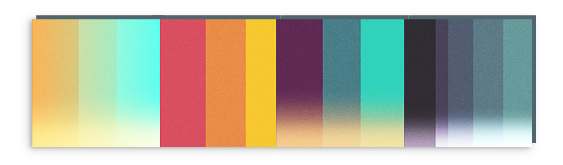

time-of-day lighting
A 4-way ramp overlay shader, for setting up lighting for various times of day, on a per-model basis.

For a 7 day game jam, I designed, modelled, rigged and animated the characters from scratch, and created a suitable refracting slime shader.
Press the "see shader" button to play with some variables.